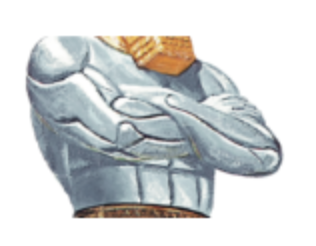

1. The New Exodus has begun.
2. There will be a major economic crisis in America.
1.Jacob
Jacob had the love of God.
God wanted to give Jacob his heritage.
So he gives Jacob a dream.
Jacob knew the dream of God.
Nonetheless, as time came closer for Esau to be blessed as the firstborn son, Jacob lost his patience.
So he is blessed as a firstborn son in a human way.
Jacob dreams in Bethel.
Jacob prays for himself.
“If you protect me, you will become my creator.”
God remedies Jacob’s strayed mind.
That is why Jacob’s suffering took so long.
Laban deceives Jacob.
God gives a helping hand to Jacob.
Jacob was born grasping Easu’s heel, but now he holds on to God.
God gives a new name to Jacob.
Why did God tell Jacob to fulfill his vow?
Just as people dream, God also dreams.
Jacob’s dream is not his own dream. It is also God’s dream.
God and Jacob, together, make their dream come true.
Jesus came to accomplish Jacob’s dream.
Jesus came to Jacob’s house as king.
The children of Israel return and construct the house of God.
| Genesis 28 | Matthew 6 | Common features |
|---|---|---|
| Early the next morning Jacob took the stone he had placed under his head and set it up as a pillar and poured oil on top of it. He called that place Bethel, though the city used to be called Luz. | After this manner therefore pray ye: Our Father which art in heaven, Hallowed be thy name. Thy kingdom come, Thy will be done in earth, as it is in heaven. | Pray to God. |
| Then Jacob made a vow, saying, "If God will be with me and will watch over me on this journey I am taking and will give me food to eat and clothes to wear so that I return safely to my father's house, then the LORD will be my God | Give us this day our daily bread. And forgive us our debts, as we forgive our debtors. And lead us not into temptation, but deliver us from evil: 1 | Ask for our daily bread and protection. |
| and this stone that I have set up as a pillar will be God's house, and of all that you give me I will give you a tenth." | For thine is the kingdom, and the power, and the glory, for ever. Amen. | 1. It can be considered both before and after the church was established. 1.Love God’s house. |
In that day the remnant of Israel, the survivors of the house of Jacob, will no longer rely on him who struck them down but will truly rely on the LORD, the Holy One of Israel. A remnant will return, a remnant of Jacob will return to the Mighty God. (Isaiah 10:20-21)
He will be great and will be called the Son of the Most High. The Lord God will give him the throne of his father David, and he will reign over the house of Jacob forever; his kingdom will never end." (Luke 1:32-33)
2.The Dwelling of David
Worthy is God to be praised.
Angles praise in heaven.
Yet, there is no more sound of praise on Earth.
Satan is the king of Earth now.
Israel lives as if they are the people of Earth.
God said.
“I shall not give my glory to the idols”
“I created Israel to praise me”
“New work will be done”
Jesus arrived to bring back Israel.
Children praise as they meet Jesus.
“Hosanna, praise Jesus, the son of David.”
Jesus smiled as He saw the children.
Why does He want to recover Israel?
God also wants to stand up from His throne,
and dance and joyfully praise.
Israel is the dwelling of David.
He recovers the dwelling of David at the end of time.
Worthy is God to be praised.
Angles praise in heaven.
Sons and daughters of Israel praise a new song on the earth.
“Hosanna, praise Jesus, the son of David.”
| Genesis 28 | Matthew 6 | Psalms 23 | Common features |
|---|---|---|---|
| Early the next morning Jacob took the stone he had placed under his head and set it up as a pillar and poured oil on top of it. He called that place Bethel, though the city used to be called Luz. | After this manner therefore pray ye: Our Father which art in heaven, Hallowed be thy name. Thy kingdom come, Thy will be done in earth, as it is in heaven. | The LORD is my shepherd, I shall not be in want. | Pray to God. |
| Then Jacob made a vow, saying, "If God will be with me and will watch over me on this journey I am taking and will give me food to eat and clothes to wear so that I return safely to my father's house, then the LORD will be my God | And forgive us our debts, as we forgive our debtors. And lead us not into temptation, but deliver us from evil: | He makes me lie down in green pastures, he leads me beside quiet waters, he restores my soul. He guides me in paths of righteousness for his name's sake. Even though I walk through the valley of the shadow of death, I will fear no evil, for you are with me; your rod and your staff, they comfort me. You prepare a table before me in the presence of my enemies. You anoint my head with oil; my cup overflows. | Ask for our daily bread and protection. |
| and this stone that I have set up as a pillar will be God's house, and of all that you give me I will give you a tenth." | For thine is the kingdom, and the power, and the glory, for ever. Amen. | Surely goodness and love will follow me all the days of my life, and I will dwell in the house of the LORD forever. | It can be considered both before and after the church was established. Love God’s house. |
"In that day I will restore David's fallen tent. I will repair its broken places, restore its ruins, and build it as it used to be,(Amos 9:11)
"I am the LORD; that is my name! I will not give my glory to another or my praise to idols. See, the former things have taken place, and new things I declare; before they spring into being I announce them to you."(Isaiah 42:8-9)
3.The new army of Israel
In war, the winner takes it all
Losers lose everything.
The war we are fighting for is a spiritual fight.
If your spirit dies, you cannot continue the spiritual fight anymore.
That is why Jesus saved our spirit.
Every king who followed the path of Jeroboam
tried to build their kingdom with the power of humans.
That is why they failed.
David knew.
God’s salvation is not in blades and spears.
War is within God.
God said.
“Son of man, can these bones live?”
Ezekiel answers.
“O sovereign Lord, you alone know.”
The war we are fighting for is a spiritual fight.
If your spirit dies, you cannot continue the spiritual fight anymore.
That is why Jesus saved our spirit.
As He breathed life through Ezekiel
They rose up and became a legion of soldiers.
History is written by the victors.
Rewrite history!
Write new history!
Israel has risen up from the dead!
For our struggle is not against flesh and blood, but against the rulers, against the authorities, against the powers of this dark world and against the spiritual forces of evil in the heavenly realms. (Ephesians 6:12)
4.The Law
God has given the law to Jews.
Its purpose was to teach God's love.
However, the Jews failed.
It's because the law only ever existed as knowledge.
Thus, how can we teach God's love to the Jewish people?
Jesus must come in person.
Jesus came to fulfill the law, not to eliminate it.
Was there something wrong with Moses bringing the law?
Moses is innocent.
Moses was a faithful servant to the house of God to maintain the testimony of the future.
Who is Peter?
He confesses that Jesus is the Son of God, whereas everyone else refers to him as a prophet.
But Jesus had something he wanted to hear from Peter.
“Peter, do you love me?”
Seek the face of God.
It is impossible for the human mind to know God.
We can find God when we look at Jesus.
Love the LORD your God with all your heart and with all your soul and with all your strength.(Deuteronomy 6:5)
"Do not think that I have come to abolish the Law or the Prophets; I have not come to abolish them but to fulfill them.(Matthew 5:17)
No one has ever seen God, but God the One and Only,who is at the Father's side, has made him known.(John 1:18)
5. The Daniel
Then they will know that I am the LORD their God, for though I sent them into exile among the nations, I will gather them to their own land, not leaving any behind. (Ezekiel 39:28)
The United States will become perilous if all Jews leave. “Sons and daughters of Israel will return and build God’s house,” declares God. I do not see this prophecy as a symbol. I see it as a true occurrence that will happen in the future. I call this the ‘New Exodus.’
| Before the Arrival of Jesus | After the Arrival of Jesus | |||
|---|---|---|---|---|
| Babylon | Before New Exodus | After New Exodus | Before Economic Crisis | After Economic Crisis |
| USA, UK | UK | |||
| Persia | Russia | |||
| Greece | Undisclosed | |||
| Rome | Undisclosed | |||
| Many nations | Undisclosed | |||
I think that the salvation history of God and the profane history are entwined like gears. The most likely scenario, in my opinion, for a “New Exodus” to take place is through an economic crisis in the United States.
Experts in economics claim that worrying about the US dollar is pointless. But I think the power of America can’t be maintained forever because I believe in the prophets.
| Profane History | Egypt | Edict of Cyrus | Economic Crisis New World Order |
|---|---|---|---|
| Salvation History | Exodus | The Return of Prisoners | New Exodus New Church of Jerusalem |
The global order of the United States is currently threatened, and a New World Order will be established on top of it. (Economic Crisis of the US, FEMA Camp, Freemasonary, and New World Order are personal opinions.)
Q. When does Israel recover? When does Jesus arrive?
A. Only God knows. (Acts 1:7)However, everyone can express his or her own thoughts. I will tell you mine based on the Bible.
Ishaiah 61:1-2 is quoted in Luke 4:18-19; however, ‘to proclaim the day of vengeance of our God (Ishaiah 61:2)’ is missing from verse 19.
Jesus took on the shape of a servant when He first appeared. The Second Advent judges his enemies in an appearance of a king. The land does not vanish, but refreshed in Christ.It is very possible, in my opinion, that He will appear as a king in 2064, the year of the Jubilee.
Q. So when will the ‘New Exodus’ happen?
A. The ‘New Exodus’ will happen in 2034 if one generation is calculated 30 years from 2064. (The definition of one generation could be different.)
"Now learn this lesson from the fig tree: As soon as its twigs get tender and its leaves come out, you know that summer is near. Even so, when you see all these things, you know that it is near, right at the door. I tell you the truth, this generation will certainly not pass away until all these things have happened. (Matthew 24:32-34)
| Luke 4:18-19 | Isaiah 61:1-2 |
|---|---|
| "The Spirit of the Lord is on me, because he has anointed me to preach good news to the poor. He has sent me to proclaim freedom for the prisoners and recovery of sight for the blind, to release the oppressed, to proclaim the year of the Lord's favor." |
The Spirit of the Sovereign LORD is on me, because the LORD has anointed me to preach good news to the poor. He has sent me to bind up the brokenhearted, to proclaim freedom for the captives and release from darkness for the prisoners, |
| to proclaim the year of the LORD's favor and the day of vengeance of our God, to comfort all who mourn, |
Comfort, comfort my people, says your God. Speak tenderly to Jerusalem, and proclaim to her that her hard service has been completed, that her sin has been paid for, that she has received from the LORD's hand double for all her sins. (Isaiah 40:1-2)
Today, Isaiah’s prophecy has come true for you. We have entered a New Exodus. I am here to share beautiful tidings. (Isaiah 40:9) I love both Palestine and Israel. We have faith that Israel will be recovered, so we may even shout in the wilderness. (Isaiah 40:3)
My words won’t be in vain when they are spoken. It becomes a word of living power that breathes fresh life into Palestine and Israel. (Galatians 3:29) (Ephesians 2:15).
Lim Hyunsung
republic of korea
e-mail: hommefatale0128@gmail.com
homme-fatale@naver.com
KakaoTalk ID: Ihs910128